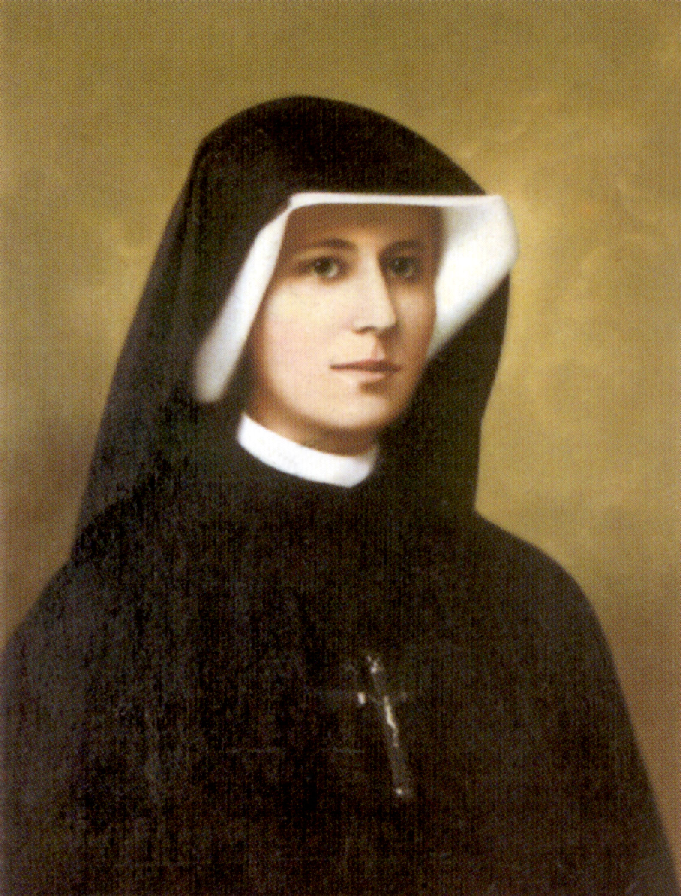
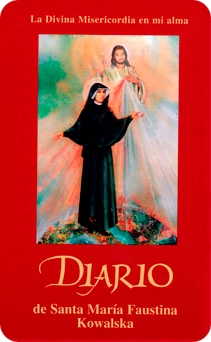
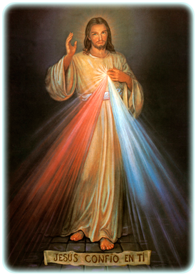
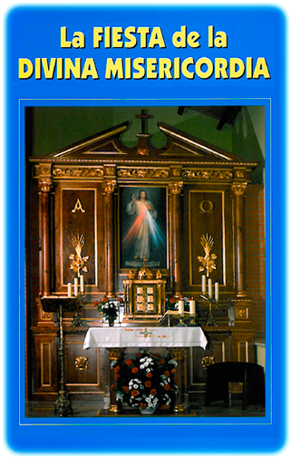

SANTA FAUSTINA KOWALSKA


(Reproducir / Detener)
Nació en Glogowiec (Polonia) el 25 de Agosto de 1905. Fue bautizada con el nombre de Elena. Sus padres Stanislaus y Mariana vivían de los frutos de su huerta y otros ingresos provenientes del trabajo de carpintería que completaban lo necesario para el sustento de la familia. Elena era la tercera de los diez hermanos.
Ya de niña era muy piadosa y adornada de las virtudes propias de una familia cristiana. Su vocación religiosa se manifestó desde los 7 años. Intentó realizarla a los 16 años, pero no le fue posible, debido a la negativa de sus padres para dejarla ingresar en el convento. A pesar de la insistente llamada de Jesús, ella trató de olvidarlo participando de las diversiones propias del ambiente. Un día que con su hermana había asistido a un baile, Jesús se le manifestó con su cuerpo lleno de sangre y heridas y le dijo: “¿Cuánto tiempo tengo que esperarte? ¿Cuánto tiempo vas a seguir poniéndome a un lado?”. Salió del lugar y fue a la catedral de San Estanislao de Koska, oró fervientemente y preguntó a Jesús qué había de hacer. “Ve inmediatamente a Varsovia –le dijo Jesús- allí entrarás en un convento”. Ella fue; y mientras buscaba convento tuvo que dedicarse al servicio doméstico en casa de una familia católica. En ninguna casa religiosa era recibida por su aspecto descuidado y aparente falta de formación. Llamó a las puertas de la Congregación de las Hermanas de la Madre de Dios de la Misericordia. En el diálogo con la madre superiora, ésta le dice: “Ve a preguntar al Señor de la casa”. Fue, y El le dijo: “Te recibo. Estás en mi Corazón”. La admitieron en el convento, pero aún estuvo más de un año sin ingresar en él. Lo hizo el 1 de Agosto de 1925. Le faltaban 24 días para cumplir 20 años. Después reconoció: “Me sentía inmensamente feliz, me pareció que entré en la vida del paraíso”.
El 1 de Marzo de 1936 hizo los votos perpetuos. El 22 de Febrero de 1931, se inicia una serie continuada de apariciones de Jesús, que durante más de siete años le irán descubriendo el insondable misterio de la Infinita Misericordia y que irá escribiendo en su Diario. Estas visiones frecuentes de Jesús por Santa Faustina, le fueron cambiadas por la visión eterna y gloriosa en la Casa del Padre el 5 de Octubre de 1938, a causa de una tuberculosis que sufrió durante varios años.
NO HABRA OTRA REVELACION
“La economía cristiana, por ser alianza nueva y definitiva, nunca pasará; ni hay que esperar otra revelación pública antes de la gloriosa manifestación de Nuestro Señor Jesucristo” (DV 4). Sin embargo, aunque la Revelación esté acabada, no está completamente explicitada; corresponderá a la fe cristiana comprender gradualmente todo su contenido en el transcurso de los siglos. (Art. 66 del Catecismo de la Iglesia Católica).


El Señor, por medio de sus revelaciones, le hizo ver a Santa Faustina Kowalska el mal, el sufrimiento y el dolor que había en el mundo, la necesidad de orar por la conversión de los pecadores y por toda la humanidad. El Señor le inspiró las oraciones de súplica que componen la coronilla de la Divina Misericordia. En estas oraciones, pedimos al Padre que por la pasión de su Hijo Jesucristo, tenga Misericordia de nosotros y del mundo entero. Con ello damos cumplimiento a LA GRAN REVELACIÓN que Jesús nos hace en el evangelio de San Juan: “Os aseguro que el Padre os concederá todo lo que pidáis en mi nombre… presentareis vuestras súplicas al Padre en mi nombre y yo voy a interceder ante el Padre por vosotros.” (Jn. 16, 23ss). Efectivamente, solo el ofrecimiento al Padre de la pasión de Cristo, es capaz de librarnos del mal, lo que insistentemente hacemos en las cinco decenas de este rosario o coronilla.
En la Letanía de la Divina Misericordia, alabamos las grandezas de Dios, sus maravillas y el supremo atributo que es su Misericordia, de las que brota nuestra total confianza en Él.


Prometo que el alma que venera esta imagen no perecerá. También prometo, ya aquí en la tierra, la victoria sobre los enemigos y, sobre todo, a la hora de la muerte. Yo mismo la defenderé como mi gloria. (48).
Los dos rayos significan la sangre y el agua. El rayo pálido simboliza el agua que justifica a las almas. El rayo rojo simboliza la sangre que es la vida de las almas… Ambos rayos brotaron de las entrañas más profundas de mi Misericordia cuando mi Corazón agonizante fue abierto en la cruz por la lanza. (299).
Proclama que la Misericordia es el atributo más grande de Dios. Todas las obras de mis manos están coronadas por la Misericordia. (301).
- Venerar y difundir la imagen de Jesús Misericordioso, Jesús resucitado y glorioso en el triunfo de su Misericordia, tal como el Señor le reveló a Santa Faustina, es parte importante del apostolado de la Divina Misericordia. Ello implica propagar y difundir por el mundo entero a Jesús resucitado, nuestra esperanza. Su resurrección nos asegura que la muerte no es el final. “Si Jesús no ha resucitado, vana es nuestra fe”.


Deseo que haya una Fiesta de la Misericordia. Quiero que esta imagen que pintarás con el pincel, sea bendecida con solemnidad el primer domingo después de la Pascua de resurrección. Ese domingo debe ser la Fiesta de la Misericordia. (49).
Derramo todo un mar de gracias sobre las almas que se acerquen al manantial de mi Misericordia. El alma que se confiese y reciba la santa comunión ese día, obtendrá el perdón total de culpas y de las penas. La humanidad no conocerá paz hasta que no se dirija a la fuente de mi Misericordia. (699).